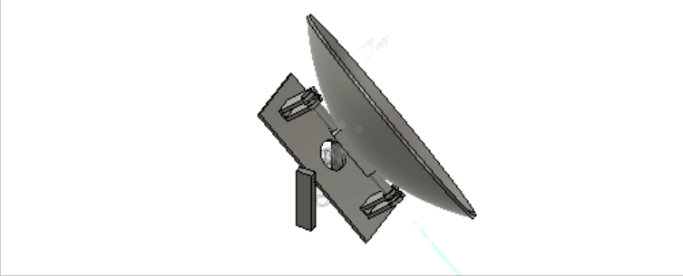

<topbar style="display:none;">
<item><a href="../index.html">Home</a></item>
<item><a href="../about.html">About</a></item>
<menu name="Updates">
<item><a href="../week-1/index.html">Week 1</a></item>
<item><a href="../week-2/index.html">Week 2</a></item>
<item><a href="../week-3/index.html">Week 3</a></item>
<item><a href="../week-4/index.html">Week 4</a></item>
<item><a href="../week-5/index.html">Week 5</a></item>
<item><a href="../week-6/index.html">Week 6</a></item>
<item><a href="../week-7/index.html">Week 7</a></item>
<item><a href="../week-8/index.html">Week 8</a></item>
<item><a href="../week-9/index.html">Week 9</a></item>
<item><a href="../week-10/index.html">Week 10</a></item>
<item><a href="../week-11/index.html">Week 11</a></item>
<!-- <item><a href="#">Final Project</a></item> -->
</menu>
</topbar>
<!-- This is a comment, it is ignored by the compiler/interpreter -->
## Week 8 - Further Prototyping and Mid Review
</br>
<h4> Solar Collection and Transport</h4>
The Design Integration team going into the mid review focused mainly on designing the mechanism by which we will be moving
the solar collector. We had determined in previous weeks that the transfer mechanism would be via our solar tunnel
so our main remaining design questions focused on how the solar collector could be moved to track the sun without
interfering with our energy transfer mechanism, as well as determining which scheme we will use to actually track
where the sun is, and move the solar collector to point to it.
<h4> Solar Tracker Joint Mechanism</h4>
In determining the mechanism which we would use to mount our solar collector, we considered two main options. The first,
an altazimuthal was our main choice for mounting mechanism. As shown in the diagram below, this mounting scheme
uses two axes of motion, the collector mounted in the center.
<img src="./altazimuthal mount.jpg" alt="altazimuthal" width="200"/>
The second method which we considered was the equatorial mount, which utilizes the fact that the sun moves on a single
equatorial path at each latitude to allow the collector to rotate on a single axis, as shown in the diagram below.
<img src="./Equatorial Mount.jpg" alt="equatorial mount" width="200"/>
<h5> Altazimuthal Mounting System</h5>
The altazimuthal mount has several advantages over the other standard approach to a solar collector mount, due to its two
axes of motion. The the two axes of motion allow the altazimuthal mount to be easily adjusted to different elevations
and latitudes, whereas our alternate mounting method relies on a single axis of motion and must be manually adjusted
to follow the equatorial path of each elevation and latitude.
An additional advantage of the altazimuthal method is the ease with which it can be implemented. The two axes of motion
lend themselves to very intuitive designs of how to rotate the solar collector, which does make the implementation
of this approach much simpler than the equatorial mounting system.
Having multiple axes of motion which must be motorized does however come with a few drawbacks. Both axes of motion must
be able to be attached to motors, which requires us to design an electrical supply system to the motors which allows
us to maintain the connection to the angle of elevation as the motors controlling that angle change position. Another
difficulty arising from this is that the solar tracking algorithm must translate the position of the sun to two distinct
motor positions, as opposed to a single motor which can track at a constant rate throughout the day.
<h5> Equatorial Mount</h5>
The equatorial mount system has one significant advantage over the altazimuthal mounting system, in that it only has a
single axis of motion, and the course of the solar collector's motion along that axis is constant. This allows the
solar tracking to be much simpler for an equatorially mounted solar collector, as the collector can rotate through a
specified range at a constant rate. This allows us to do much less computation, and the precision of our solar collector
is no longer as dependent on the precision we can derive from our detectors.
In preparing for our mid review, my specific task was to design a 3D model of an equatorially mounted solar collector. In
adapting the mounting system to fit with the solar collector, I chose to use the German Equatorial mount system, as shown
in the diagram below.
<img src="./collector equatorial.jpg" alt="German Equatorial" width="200"/>
From that point, I moved on to sketching out the specific dimensions of the solar collector mount, and joint with the supporting
structure. The initial dimensions that I decided on put the axis of rotation at 10 cm lower than the base point of the
hyperbolic dish. The dimensioning of the joint is shown below.
<img src="./German mount dimensions.jpg" alt="joint dimensions" width="200"/>
<img src="./Equatorial mount box.jpg" alt="box dimensions" width="200"/>
Placing the joint 10 cm back from the base of the dish led to the hole cut in the dish for the solar tunnel moving on too
long of a path to allow us to continue using this method for transfer of energy from the solar collector to the thermal
battery. The obvious solution to this problem which I implemented in the redesign was to move the axis of rotation for
the solar collector to approximately the center point of the dish, as shown in the diagram below.
<img src="./Equatorial mount final.jpg" alt="centered axis equatorial mount" width="200"/>
With that method of joint attachment determined, I created a 3D CAD model of the equatorial mounting mechanism, animated
below, which we were able to 3D print a scale model of to present to our critics at the mid review.

---
Precedent websites:
* <a href="https://inhabitat.com/worlds-first-molten-salt-solar-plant-produces-power-at-night/">Molten Salt Power Plant</a>
* <a href="https://www.energy.gov/energysaver/solar-water-heaters">Solar Water Heater</a>
* <a href="https://www.energy.gov/eere/solar/photovoltaics">Photovoltaics</a>